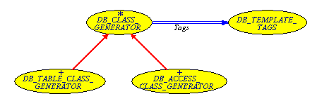

EiffelStore enables to create data structures mapped to your own database. This part describes how the EiffelStore wizard generates these structures mapped to your database and how you can map your own classes to your database with EiffelStore.
Tip: We recommend that you read what are and how to use these data structures before reading this section.
The EiffelStore wizard generates the database-specific classes from an EiffelStore generation system based on template files containing tags.
Let us see first how the EiffelStore generation system works. Let us see then how the EiffelStore wizard uses this system for the data structures generation.
This part describes the class creation in 4 steps:
Let us see first what information you can map into your classes.
2 kinds of classes can be generated:
Classes that represents a database table.
Classes that represents the whole database.
You can insert information about a database table:
The table name
The number of attributes of table
You can also select a piece of code, map it to a table attribute and repeat the operation for every attribute. Information that can be inserted is:
The attribute names
The attribute types
The attribute default creation values
The attribute positions in the table
Thus you can get for instance class attributes that correspond to database attributes:
class CONTACTS
feature
id: INTEGER
lastname: STRING
firstname: STRING
You can also modify the piece of code to map for the first and last attributes, for cosmetics reasons. You can also choose to only map a piece of code to attributes of a given type.
Database content classes can basically store the list of your database tables.
You can select a piece of code and map it to database table information:
Database table name.
Database table position in the database.
The mapped pieces of code are then concatenated in your file.
EiffelStore follows this sequence of steps to generate a class:
You provide meta-data about the table or view
You provide the template
It parses the template to find the tags
It replaces each tag by the meta-data value corresponding to the tag
Let us take an example:
| template file extract | corresponding result file extract |
| attribute_count: <ACNT> | attribute_count: 5 |
This works for meta-data on the class or view. For meta-data on class (or view) attributes, a second tag type enables to specify text areas that are mapped to specific table (or view) attributes.
Let us take an example:
| template file extract | corresponding result file extract |
| <A:A:A> <AN:L>: <TN:U> </A> |
companyid: DOUBLE companyname: STRING |
Text contained in the tag 'A' is mapped to each table (or view) attribute and the resulting texts are concatenated. Let us see now the details about each tag.
The available tags for database table classes generation can be separated into 3 types:
Tags corresponding to table meta-data
Tags corresponding to attribute meta-data
Tags to enclose attribute meta-data
| Tag name | Tag description | Options | |
| Option name | Option description | ||
| <CN:?> | Table name | U | in uppercase |
| I | with initial capital | ||
| L | in lowercase | ||
| <ACNT> | Attribute count | N/A | |
| Tag name | Tag description | Options | |
| Option name | Option description | ||
| <AN:?> | Attribute name | U | in uppercase |
| I | with initial capital | ||
| L | in lowercase | ||
| <IT> | Attribute position in the table | N/A | |
| <TN:?> | Attribute type name | U | in uppercase |
| I | with initial capital | ||
| L | in lowercase | ||
| <TDV> | Attribute type default value | N/A | |
Note: Attribute tags are only valid within an enclosing tag.
The tag <A:?:?> </A> encloses text that will be mapped to attributes matching criteria. These criteria are specified by the tag options:
First option: attribute type criterion
| Option name | Option description |
| A | All attributes |
| I | INTEGER attributes |
| S | STRING attributes |
| D | DATE attributes |
| B | BOOLEAN attributes |
| C | CHARACTER attributes |
| F | DOUBLE attributes |
Second option: attribute position criterion
| Option name | Option description |
| A | All attributes |
| F | First attribute |
| I | Intermediate attributes |
| L | Last attribute |
Note: this option is generally used to have a valid and nice layout or indentation.
Note: several options can be selected for one criterion.
The tags described above can be reused for database content: database content class mapping is equivalent to the previous mapping but within a different scope:
class corresponds to the database rather than tables
class content deals with tables rather than table attributes
The meaning of available tags is so modified:
Note: every tag is not available for this mapping.
| Tag name | Tag description |
| <ACNT> | Table count |
| Tag name | Tag description | Options | |
| Option name | Option description | ||
| <CN:?> | Table name | U | in uppercase |
| I | with initial capital | ||
| L | in lowercase | ||
| <IT> | Table position in the database | N/A | |
The tag <A:A:?> </A> encloses text that will be mapped to tables matching a position criterion. This criterion is specified by the tag options:
| Option name | Option description |
| A | All tables |
| F | First table |
| I | Intermediate tables |
| L | Last table |
The data structure generation system is implemented with 4 EiffelStore classes:
DB_CLASS_GENERATOR abstractly generates a class mapped to database meta-data.
DB_TABLE_CLASS_GENERATOR generates a class mapped to a database table.
DB_ACCESS_CLASS_GENERATOR generates a class mapped to the database.
DB_TEMPLATE_TAGS defines available tags for mapping and their meaning.

Generation classes BON diagram
The EiffelStore wizard uses the EiffelStore generation system described above to generate the data structures mapped to your database.
The wizard generates 3 types of classes:
The wizard uses one different template for each class.
For each selected database table, a class is created from the same template, mapping the database table. This template is:
indexing
description: "Class which allows EiffelStore to retrieve/store%
%the content of a table row from database table <CN:U>"
author: "EiffelStore Wizard"
date: "$Date$"
revision: "$Revision$"
class
<CN:U>
inherit
DB_TABLE
-- redefine
-- out
-- end
undefine
Tables,
is_valid_code
end
DB_SPECIFIC_TABLES_ACCESS_USE
create
make
feature -- Access
<A:A:A> <AN:L>: <TN:U>
</A> table_description: DB_TABLE_DESCRIPTION is
-- Description associated to the <CN:L>.
do
tables.<CN:L>_description.set_<CN:L> (Current)
Result := tables.<CN:L>_description
end
feature -- Initialization
set_default is
do
<A:A:A> <AN:L> := <TDV>
</A> end
feature -- Basic operations
<A:A:A> set_<AN:L> (a_<AN:L>: <TN:U>) is
do
<AN:L> := a_<AN:L>
end
</A>feature -- Output
out: STRING is
-- Printable representation of current object.
do
Result := ""
<A:A:A> if <AN:L> /= Void then
Result.append ("<AN:I>: " + <AN:L>.out + "%N")
end
</A> end
end -- class CODESNote: the template content can be adjusted, for instance to add comments or change the indexing. However, the fundamental template structure should not be changed to use data structures as described in the corresponding section.
For each selected database table, a class is also created from an unique template, mapping the database table. This template is:
indexing
description: "Description of class <CN:U>"
author: "EiffelStore Wizard"
date: "$Date$"
revision: "$Revision$"
class
<CN:U>_DESCRIPTION
inherit
DB_TABLE_DESCRIPTION
-- rename
-- Tables as Abstract_tables
undefine
Tables,
is_valid_code
end
DB_SPECIFIC_TABLES_ACCESS_USE
create
{DB_SPECIFIC_TABLES_ACCESS} make
feature -- Access
Table_name: STRING is "<CN:U>"
Table_code: INTEGER is <CI>
Attribute_number: INTEGER is <ACNT>
-- Number of attributes in the table.
Id_code: INTEGER is
-- Table ID attribute code.
do
Result := <IC>
end
<A:A:A> <AN:I>: INTEGER is <IT>
</A> attribute_code_list: ARRAYED_LIST [INTEGER] is
-- Feature code list
once
create Result.make
(Attribute_number)
<A:A:A> Result.extend (<AN:I>)
</A> end
description_list: ARRAYED_LIST [STRING] is
-- Feature name list. Can be interpreted as a list
-- or a hash-table.
once
create Result.make (Attribute_number)
<A:A:A> Result.extend ("<AN:I>")
</A> end
type_list: ARRAYED_LIST [INTEGER] is
-- Feature type list. Can be interpreted as a list
-- or a hash-table.
once
create Result.make (Attribute_number)
<A:A:A> Result.extend (<TN:I>_type)
</A> end
to_delete_fkey_from_table: HASH_TABLE [INTEGER, INTEGER] is
-- List of tables depending on this one and their
-- foreign key for this table.
-- Deletion on this table may imply deletions on
-- depending tables.
once
<DH> end
to_create_fkey_from_table: HASH_TABLE [INTEGER, INTEGER] is
-- List of associated necessary tables and the
-- linking foreign keys.
-- Creation on this table may imply creations on
-- associated necessary tables.
once
<CH> end
attribute (i: INTEGER): ANY is
-- Get feature value of feature whose code is 'i'.
do
inspect i
<A:A:A> when <AN:I> then
Result := <CN:L>.<AN:L>
</A> end
end
set_attribute (i: INTEGER; value: ANY) is
-- Set feature value of feature whose code is `i' to `value'.
-- `value' must be of type STRING, INTEGER, BOOLEAN, CHARACTER,
-- DOUBLE or DATE_TIME. References are made automatically from
-- expanded types.
local
integer_value: INTEGER_REF
double_value: DOUBLE_REF
boolean_value: BOOLEAN_REF
character_value: CHARACTER_REF
date_time_value: DATE_TIME
string_value: STRING
do
inspect i
<A:S:A> when <AN:I> then
string_value ?= value
<CN:L>.set_<AN:L> (string_value)
</A><A:F:A> when <AN:I> then
double_value ?= value
if double_value /= Void then
<CN:L>.set_<AN:L> (double_value.item)
else
<CN:L>.set_<AN:L> (0.0)
end
</A><A:I:A> when <AN:I> then
integer_value ?= value
if integer_value /= Void then
<CN:L>.set_<AN:L> (integer_value.item)
else
<CN:L>.set_<AN:L> (0)
end
</A><A:D:A> when <AN:I> then
date_time_value ?= value
<CN:L>.set_<AN:L> (date_time_value)
</A><A:C:A> when <AN:I> then
character_value ?= value
if character_value /= Void then
<CN:L>.set_<AN:L> (character_value.item)
else
<CN:L>.set_<AN:L> ('%U')
end
</A><A:B:A> when <AN:I> then
boolean_value ?= value
if boolean_value /= Void then
<CN:L>.set_<AN:L> (boolean_value.item)
else
<CN:L>.set_<AN:L> (False)
end
</A> end
end
feature {<CN:U>} -- Basic operations
set_<CN:L> (a_<CN:L>: <CN:U>) is
-- Associate the description to a piece of <CN:L>.
require
not_void: a_<CN:L> /= Void
do
<CN:L> := a_<CN:L>
ensure
<CN:L> = a_<CN:L>
end
feature {NONE} -- Implementation
<CN:L>: <CN:U>
-- Piece of <CN:L> associated with the description
end -- class CODES_DESCRIPTIONNote: As for the table class generation, the template content can be adjusted, for instance to add comments or change the indexing. However, the fundamental template structure should not be changed.
Some additional tags are directly replaced by the wizard:
The <CR> and <DR> tags are replaced with information on associated tables.
The <IC> tag is replaced by information on the primary key (table ID).
The <CI> tag is replaced by the table position in the database.
The DB_SPECIFIC_TABLES_ACCESS class is mapped to the database from the following template:
indexing
description: "Description of database tables.%
%Use this class through DB_SPECIFIC_TABLES_ACCESS_USE."
author: "EiffelStore Wizard"
date: "$Date$"
revision: "$Revision$"
class
DB_SPECIFIC_TABLES_ACCESS
inherit
DB_TABLES_ACCESS
creation
make
feature -- Access
<A:A:A> <CN:I>: INTEGER is <IT>
</A> Table_number: INTEGER is <ACNT>
code_list: ARRAYED_LIST [INTEGER] is
-- Table code list.
once
create Result.make (Table_number)
<A:A:A> Result.extend (<CN:I>)
</A> end
name_list: ARRAYED_LIST [STRING] is
-- Table name list. Can be interpreted as a list
-- or a hash-table.
once
create Result.make (Table_number)
<A:A:A> Result.extend ("<CN:I>")
</A> end
obj (i: INTEGER): DB_TABLE is
-- Return instance of table with code `i'.
do
inspect i
<A:A:A> when <CN:I> then
create {<CN:U>} Result.make
</A> end
end
description (i: INTEGER): DB_TABLE_DESCRIPTION is
-- Return description of table with code `i'.
do
inspect i
<A:A:A> when <CN:I> then
Result := <CN:L>_description
</A> end
end
<A:A:A> <CN:L>_description: <CN:U>_DESCRIPTION is
-- Unique description of table `<CN:U>'.
once
create Result.make
end
</A>
end -- class DB_SPECIFIC_TABLES_ACCESS